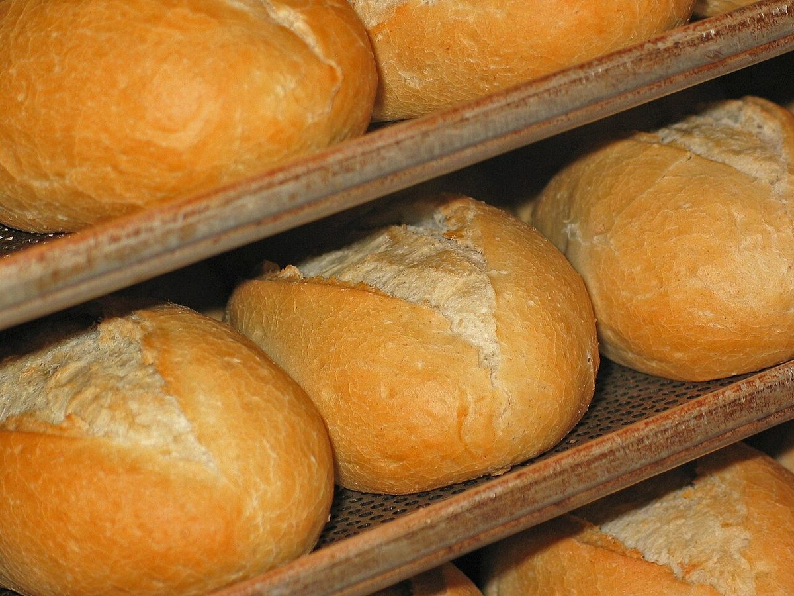
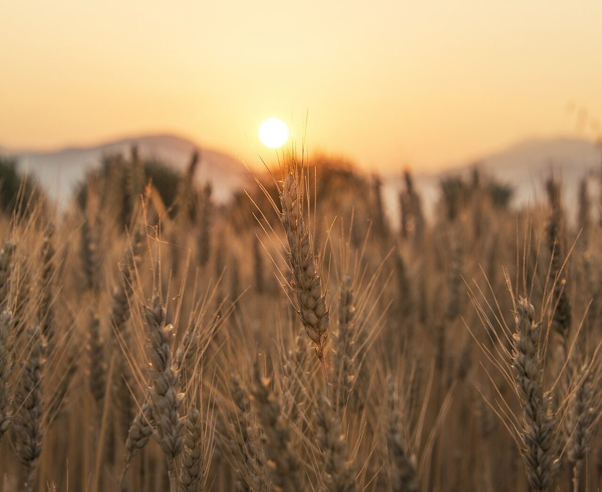
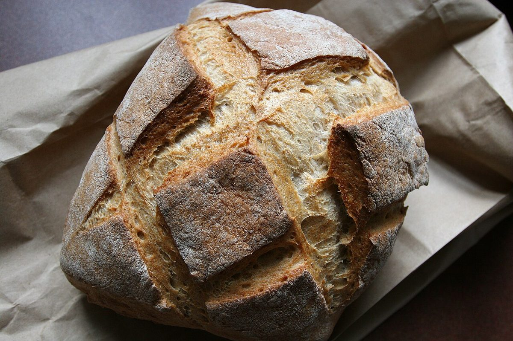
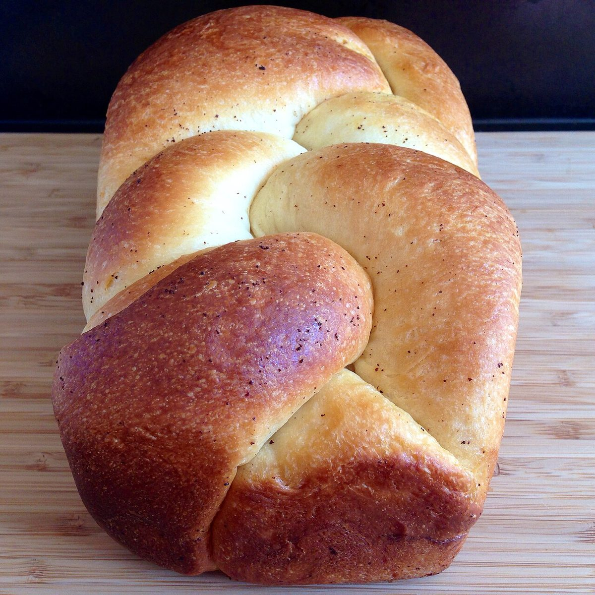
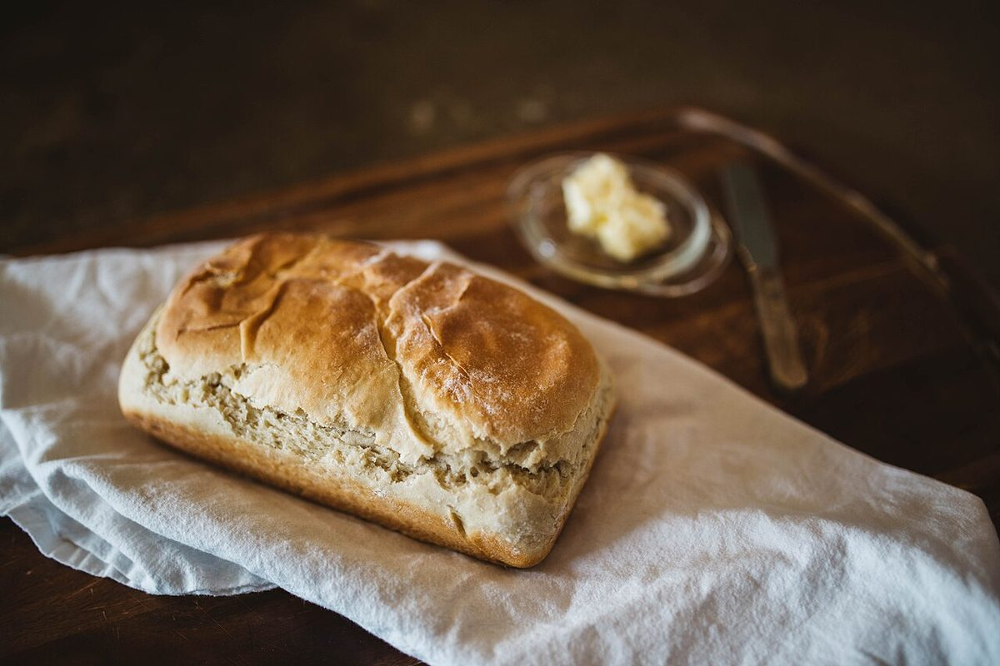

制作側のコンセプト案
ふだんの食卓に、
小さな工房のパンを。
以下は制作側が考えた案です。お店の理念や実際の内容とは異なる場合があります。
- 01
お店の名前を、まっすぐ見せる
店名と電話番号、Instagramをページの上部にまとめ、見た人がすぐに連絡できる形にします。
- 02
写真で、パンのある空気を伝える
写真を大きく使い、文章は短くします。本番では、お店で撮影した写真に差し替えられます。
- 03
お問い合わせ先を、迷わず探せる
電話はスマホの画面下にいつも表示。住所と地図はアクセスページにまとめます。
写真で見るイメージ
フリー素材のイメージ写真です。






お店の情報
- 店名
- 小さなパン工房 RISORA
- 住所
- 〒400-0118 山梨県甲斐市竜王942
- 電話
- 070-4235-7663
- 営業時間
- 準備中(お問い合わせください)
- 定休日
- 準備中(お問い合わせください)
メニューや営業日は、お電話またはInstagramでご確認ください。
アクセスを見る